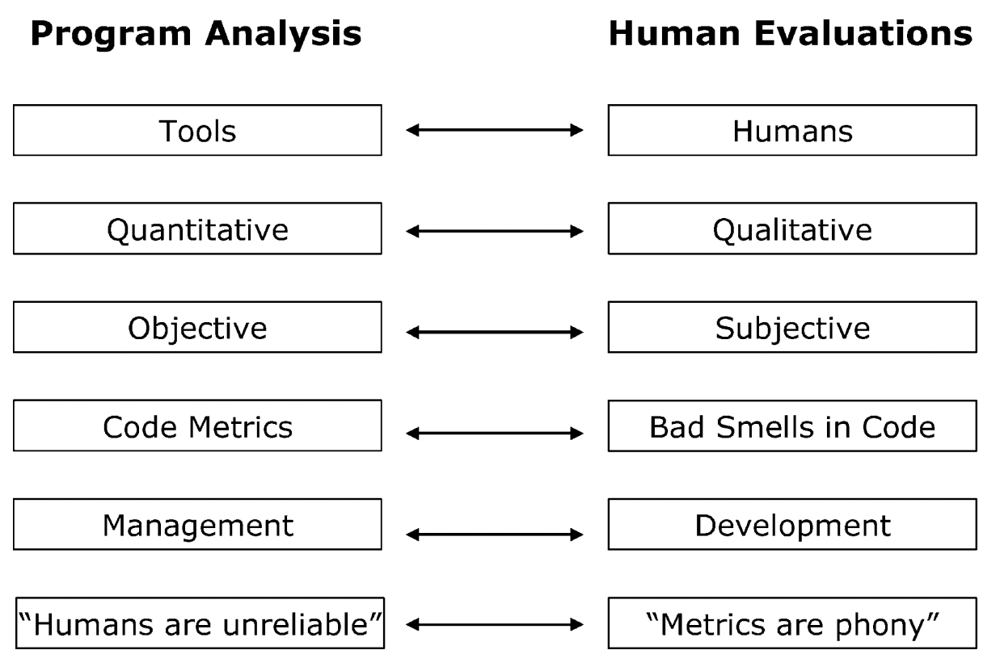

What's in this paper?
• Differences between human and machine based evolvability analysis are outlined.
• Demographics related to authorship, organizational role, and knowledge of the software affect evolvability evaluations.
• The machine and human evaluations of code smells provided conflicting results.
Abstract
This paper presents the results of an empirical study on the subjective evaluation of code smells that identify poorly evolvable structures in software. We propose use of the term software evolvability to describe the ease of further developing a piece of software and outline the research area based on four different viewpoints. Furthermore, we describe the differences between human evaluations and automatic program analysis based on software evolvability metrics. The empirical component is based on a case study in a Finnish software product company, in which we studied two topics. First, we looked at the effect of the evaluator when subjectively evaluating the existence of smells in code modules. We found that the use of smells for code evaluation purposes can be difficult due to conflicting perceptions of different evaluators. However, the demographics of the evaluators partly explain the variation. Second, we applied selected source code metrics for identifying four smells and compared these results to the subjective evaluations. The metrics based on automatic program analysis and the human-based smell evaluations did not fully correlate. Based upon our results, we suggest that organizations should make decisions regarding software evolvability improvement based on a combination of subjective evaluations and code metrics. Due to the limitations of the study we also recognize the need for conducting more refined studies and experiments in the area of software evolvability.
Ref
Mäntylä, M. V. and Lassenius, C. "Subjective Evaluation of Software Evolvability Using Code Smells: An Empirical Study". Journal of Empirical Software Engineering, vol. 11, no. 3, 2006, pp. 395-431.
Avalable as: pdf
{kind=link}